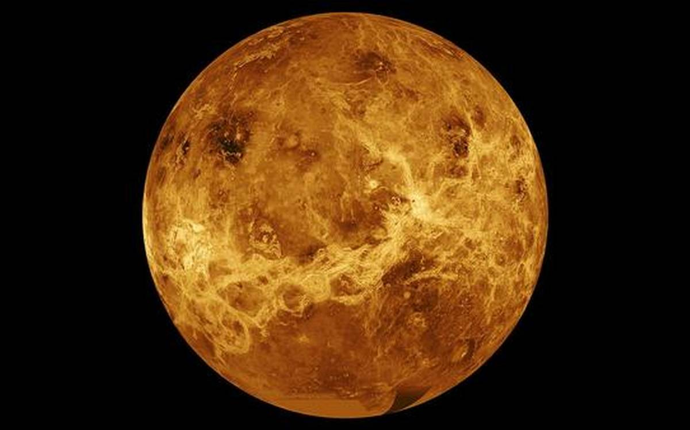
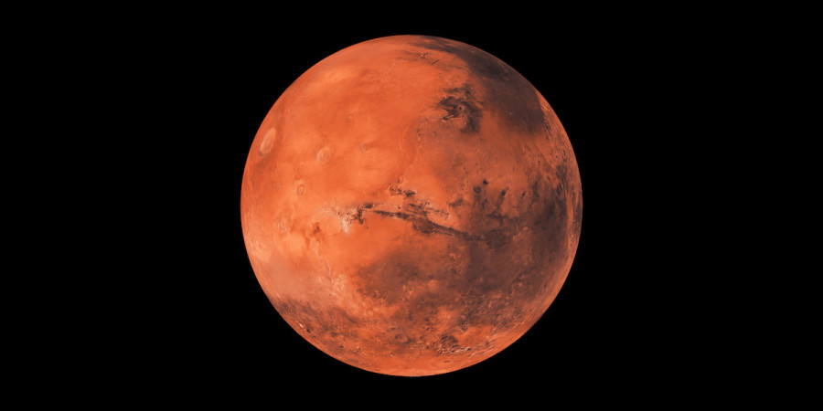

MERCURY
ABOUT ::
Mercury is the smallest planet in the Solar System and the closest to the Sun. Its orbit around the Sun takes 87.97 Earth days, the shortest of all the Sun's planets. It is named after the Roman god Mercurius (Mercury), god of commerce, messenger of the gods, and mediator between gods and mortals, corresponding to the Greek god Hermes (Ἑρμῆς). Like Venus, Mercury orbits the Sun within Earth's orbit as an inferior planet, and its apparent distance from the Sun as viewed from Earth never exceeds 28°. This proximity to the Sun means the planet can only be seen near the western horizon after sunset or the eastern horizon before sunrise, usually in twilight. At this time, it may appear as a bright star-like object but is often far more difficult to observe than Venus. From Earth, the planet telescopically displays the complete range of phases, similar to Venus and the Moon, which recurs over its synodic period of approximately 116 days.
VENUS

ABOUT ::
Venus is the second planet from the Sun. It is named after the Roman goddess of love and beauty. As the brightest natural object in Earth's night sky after the Moon, Venus can cast shadows and can be, on rare occasions, visible to the naked eye in broad daylight. Venus lies within Earth's orbit, and so never appears to venture far from the Sun, either setting in the west just after dusk or rising in the east a little while before dawn. Venus orbits the Sun every 224.7 Earth days. It has a synodic day length of 117 Earth days and a sidereal rotation period of 243 Earth days. As a consequence, it takes longer to rotate about its axis than any other planet in the Solar System, and does so in the opposite direction to all but Uranus. This means the Sun rises in the west and sets in the east. Venus does not have any moons, a distinction it shares only with Mercury among the planets in the Solar System.
EARTH

ABOUT ::
Earth, our home planet, is a world unlike any other. The third planet from the sun, Earth is the only place in the known universe confirmed to host life.
With a radius of 3,959 miles, Earth is the fifth largest planet in our solar system, and it's the only one known for sure to have liquid water on its surface. Earth is also unique in terms of monikers. Every other solar system planet was named for a Greek or Roman deity, but for at least a thousand years, some cultures have described our world using the Germanic word “earth,” which means simply “the ground.”
MARS

ABOUT::
The red planet Mars, named for the Roman god of war, has long been an omen in the night sky. And in its own way, the planet’s rusty red surface tells a story of destruction. Billions of years ago, the fourth planet from the sun could have been mistaken for Earth’s smaller twin, with liquid water on its surface—and maybe even life.
Now, the world is a cold, barren desert with few signs of liquid water. But after decades of study using orbiters, landers, and rovers, scientists have revealed Mars as a dynamic, windblown landscape that could—just maybe—harbor microbial life beneath its rusty surface even today.
JUPITER

JUPITER ::
Ancient people named the planet Jupiter well. Both its brilliance and its slow, regal movement across the sky evoked a king among gods. Today we know much more about the influence of Jupiter, a planet boasting more than twice as much mass as the solar system’s other planets put together. Jupiter’s tremendous gravity stunted the growth of newborn Mars, sculpts the asteroid belt today, and may even help protect Earth from catastrophic comet impacts.
SATURN
ABOUT ::
The planet Saturn: truly massive and stunningly beautiful with its rings. It’s also home to amazing moons like Titan.
The planet Saturn is probably the best known and most beautiful planet in the Solar System. Saturn’s rings are far more extensive and more easily seen than those of any other planet.
Saturn is the second largest planet in the solar system with a diameter of 120,000 km. It orbits the Sun every 30 years at a distance of about ten times that of the Earth’s. Saturn is the least dense of all the planets, its mean density being only 0.7 times that of water.
The visits by the Voyager spacecraft rewrote almost everything we thought we knew about Saturn, its rings and its satellites.
URANUS

ABOUT ::
The gas (and ice) giant known as Uranus is a fascinating place. The seventh planet from out Sun, Uranus is the third-largest in terms of size, the fourth-largest in terms of mass, and one of the least dense objects in our Solar System. And interestingly enough, it is the only planet in the Solar System that takes it name from Greek (rather than Roman) mythology.
But these basic facts really only begin to scratch the surface. When you get right down to it, Uranus is chock full of interesting and surprising details – from its many moons, to its ring system, and the composition of its aqua atmosphere.
NEPTUNE

ABOUT ::
Neptune, along with its cousin Uranus, is the least-explored planet in our solar system, having been visited by a spacecraft only once. Yet we’ve found more Neptune-sized worlds orbiting other stars than any other type of planet. In order to understand other solar systems and figure out whether our own is unique, we need to learn more about the windy blue world in our own backyard.
Like Jupiter and Saturn, Neptune’s atmosphere consists mostly of hydrogen and helium, but it also has methane that absorbs red light, giving it a deep blue hue. Beneath the atmosphere lies an ocean of water, ammonia, and methane, squeezed by intense pressures into a semi-solid state. For this reason, we call Neptune an ice giant, though the ice isn’t anything like what you’d find in your freezer, with temperatures likely reaching thousands of degrees! Electric currents flowing through this icy-hot ocean may be responsible for powering Neptune’s strong and unusually complex magnetic field.